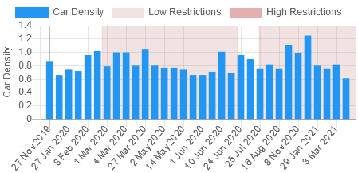
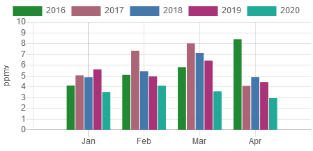

Many countries were affected by the COVID-19 pandemics, causing widespread disruption in their economic system. One of the activities that were restricted during COVID-19-related lockdowns was automobile activity. This was done to prevent the spread of the novel coronavirus. As a result, COVID-19 had an impact on the activity of automobiles used in Japan beginning in March 2020, generating a snag in the Japanese economic system. However, this issue did not persist long, as car activity in Japan began to rise at the end of 2020.
Economic:The ALOS-2 satellite of the Japanese Aerospace Exploration Agency (JAXA) monitored the density of vehicle containers at Shimpomachi Terminal in the port of Nagoya in Japan from November 2019 to June 2020 to analyze the state of industrial trade. ALOS-2 measurements suggest that new car shipments declined during the novel coronavirus outbreak. The difference in car activity before and after the COVID-19 is illustrated in Figure 1. During the coronavirus pandemic and a statewide recession in Japan, exports of Japanese-made automobiles decreased by half in April, to roughly 168,000, before recovering and returning to pre-pandemic levels in October. Sales in Japan fell from a high of 485,000 units in March to only 174,000 units in May, according to the Japanese Automobile Manufacturers Association.
During the COVID-19 pandemics, there was a noticeable difference in air quality in Japan compared to previous years. Figure 2 illustrates the difference in greenhouse gas emissions before and after the COVID-19 pandemics, which have an impact on air quality.
